P3-F sitting: your 24 ballot lines, with pictures
Sitting of 19 October 2026, build d9ef1e5b. One section per ballot line (16 rulings, then 8 taste items), in the ballot's order.
How to answer: reply "all as recommended", or name the handles where you differ.
Or tick your answers here: turn on Pre-fill from my recommendations, change only what you disagree with, then press Copy my answers and paste the text back. Answers are kept in this browser if you reload.
Pictures marked sitting were taken during this morning's sitting; now means taken at 13:48–13:50Z for this page, by looking only (menus opened and closed, nothing sent or changed). Times are UTC. MAWS ran in its dark theme; documents render light.
R.1 Rulings
Answer keep, fix now, or P4 (defer to the next phase).
How MAWS works out which models a project can use
MAWS shows a model picker for each project. To fill it, MAWS reads the same settings files the Claude Code engine reads, so the list matches what the engine would offer. Two rare cases are not copied: company-managed (policy) settings, and a project reached through a network mount. In those cases the picker could fetch a list it didn't need, or show a stale one until the next relaunch.
- Keep
- Leave it as built; the two gaps stay written down.
- Alternative
- Fix now or P4: also read policy settings and network-mounted projects the way the engine does.
Recommendation, from the ballotkeep (nothing in the sitting touched it)
Nothing to see. This is about which settings files MAWS reads behind the model picker; the picker looked and behaved normally, and neither rare case (a policy-managed Mac, a project on a network mount) exists on your machines.
Slow start-up hooks from managed settings or plugins
Claude Code can run "SessionStart" hooks when a session starts, and MAWS waits for them. MAWS learns how long to wait from your user, project and local settings files. A hook that comes from managed settings or a plugin isn't read, so MAWS waits for it at most 600 seconds (10 minutes); a hook that ran longer would make the session fail to start.
- Keep
- Keep the 10-minute floor; revisit only if you ever add such a hook.
- Alternative
- Fix now or P4: teach MAWS to read hook timeouts from managed settings and plugins too.
Recommendation, from the ballotkeep (your setup has no such hook)
Nothing to see. Your setup has no hook of that kind, so no session ever waits on one; the only visible effect would be a session failing to start after 10 minutes.
Korean Backspace in a terminal tab (the old symptom)
At an earlier sitting, typing Korean in a MAWS terminal tab and pressing Backspace deleted some characters and then stopped. Today (about 13:00Z) you launched MAWS with its keystroke recorder on, typed a Korean sample in a terminal tab and saw no symptom: "I don't think it's symptomatic". The recorder's log (~/Library/Logs/MAWS/ime-trace.log, 80,980 bytes) holds raw keystrokes, so it stays with you and no agent has read it.
- Keep
- Record "no symptom this time", keep the log, and leave the issue open in case it comes back.
- Alternative
- Fix now or P4: have an agent study the trace (you would share the log) and keep investigating.
Recommendation, from the ballotkeep: T.1 ran, no symptom, the trace is yours to keep
No picture. This was your own hands-on test, outside the captured steps, and the symptom is about what Backspace does while composing Korean, which a still picture can't show. Nothing looked wrong to you.
English screens with Korean-format times and dates mixed in
MAWS's words are English, but some times follow your Mac's Korean region setting: the Library says "Edited 2분 전 by You", the sidebar says "1분", "3일". Other places are fixed English: a date chip reads "Oct 19, 2026" while its own date picker shows "2026. 10. 19.", and version history says "1:45 AM".
- Keep
- The mix stays as it is.
- Alternative
- P4, one locale per surface: each surface uses one language for words, dates and times, for example "Edited 2 min ago" throughout, or a fully Korean line.
Recommendation, from the ballotP4: one locale per surface. The mix showed up all through the sitting (candidates 4, 7, 15, 27)
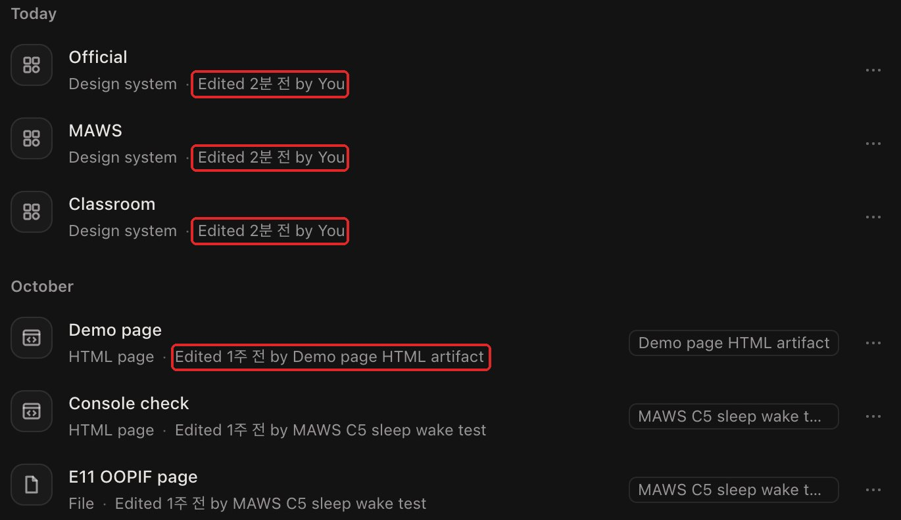
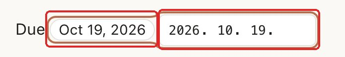
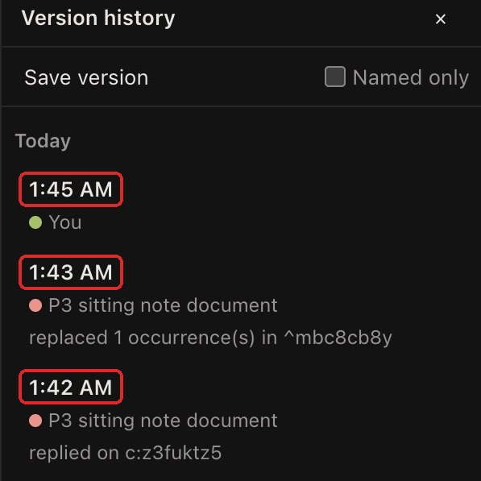
Files over 64 MB aren't copied into a Space's folder
A Space can be linked to a folder; MAWS then keeps a read-only copy of every artifact in it (here /private/tmp/p3-sitting-project/artifacts) so agents and other tools can read them. A file larger than 64 MiB is not copied.
- Keep
- Keep the 64 MiB limit.
- Alternative
- Fix now or P4: raise or remove the limit, at the cost of larger copies on disk.
Recommendation, from the ballotkeep
Nothing to see. Nothing in the sitting came near 64 MiB, and a skipped copy would only be a missing file in the folder.
No export to Hangul (HWP/HWPX)
Documents export to Markdown, web page, Word (Letter or A4) and PDF (Letter or A4). Hangul's HWP/HWPX, which Korean schools and public offices often ask for, isn't offered.
- Keep
- No HWP export.
- Alternative
- P4: add HWP/HWPX export in the next phase (or fix now: build it in this one).
Recommendation, from the ballotP4, worth keeping if you'll send documents to Korean schools or offices
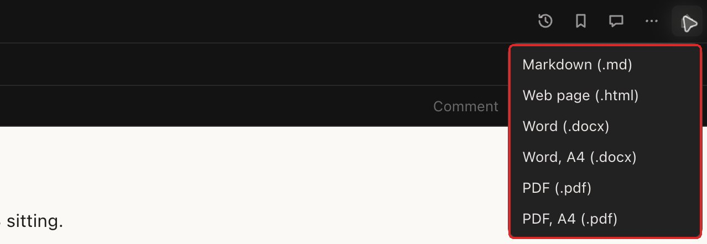
Exporting an old version of a design system "for Claude" includes today's files
A design system can carry uploaded files such as logos or fonts. If you export an older version of it in the "for Claude" format, the package holds every file the system has now, including ones added after that version. Nothing the old version needs is missing; there may be extra files. The repair is already scheduled for P4, so you are asked only to acknowledge it.
- Acknowledge
- Acknowledge: you know about the extra files; P4 repairs it.
- Alternative
- No vote is asked. If it matters more to you, say so in the note.
Recommendation, from the ballotacknowledge
Nothing to see. The difference lives inside an exported zip and appears only when files were uploaded to a design system after the version you export; the sitting didn't export an old design-system version.
Word exports don't carry their fonts
A Word (.docx) export names its fonts but doesn't include them, so Word uses its own copy of each font, or a substitute when one is missing. In the sitting, the note exported to Word opened correctly.
- Keep
- No fonts inside Word files, for good.
- Alternative
- P4: include the fonts next phase, so the file looks the same on any computer (files get larger). Fix now: do it in this phase.
Recommendation, from the ballotP4: Word showed the note correctly (X.2)
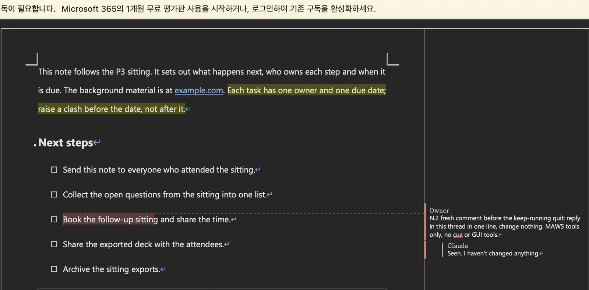
No PowerPoint export with the fonts packed inside
A deck exports to PowerPoint three ways: "fonts by name" (editable; refers to the deck's fonts, here Apple's SF Pro, without including them), "basic fonts" (editable; uses Arial, which every computer has) and "slides as pictures" (each slide is one image: exact, but not editable). There is no fourth choice that packs the fonts into the file.
- Keep
- The three choices are the whole menu; no embedded-fonts choice is planned.
- Alternative
- P4: add an embedded-fonts choice next phase (or fix now).
Recommendation, from the ballotP4: PowerPoint read "fonts by name" fine; Keynote said fonts were missing, and "basic fonts" was the one that edits cleanly there
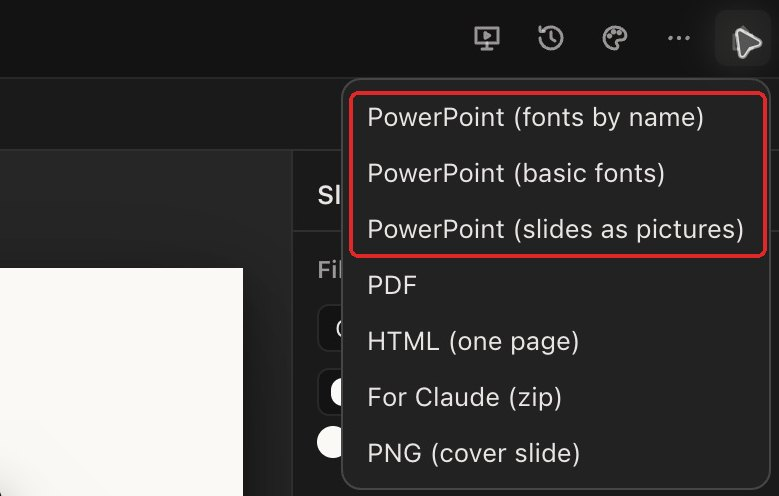
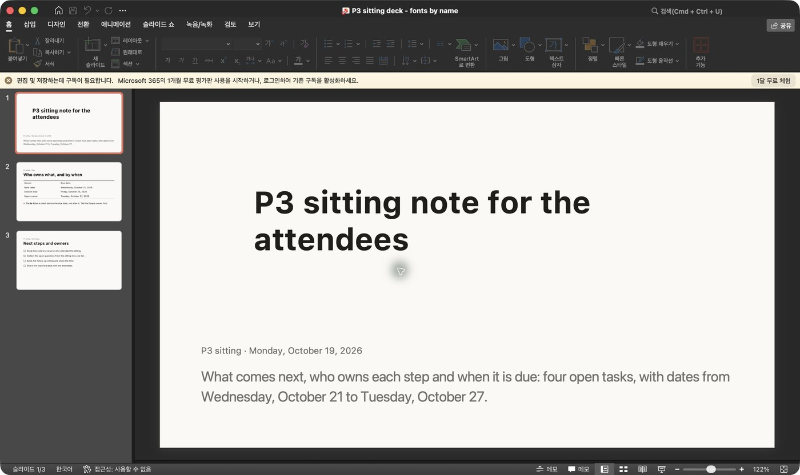
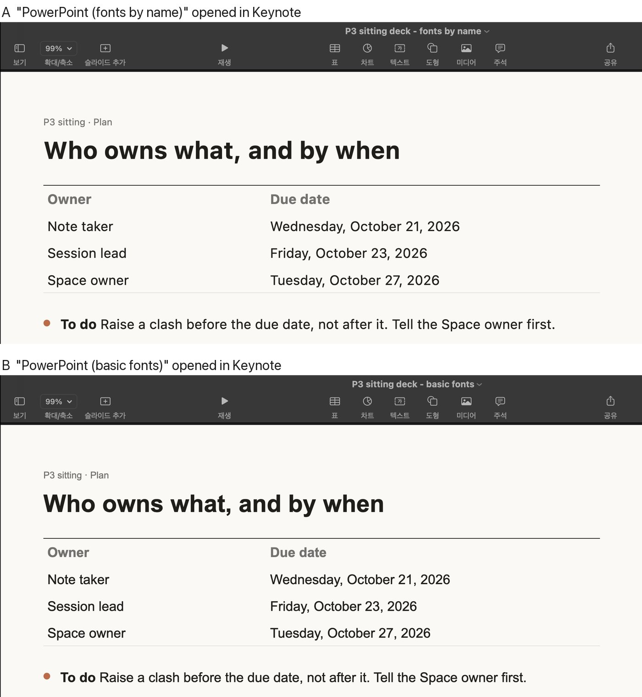
Presenting on two displays, and how PowerPoint and Keynote read the fonts
Two checks only your hands could do. The presenter: you connected a second display and pressed Present; the show ran, the hidden slide 3 was skipped, fonts matched the editor and the keys worked. The font choices in PowerPoint and Keynote: PowerPoint showed "fonts by name" correctly, Keynote reported missing fonts for it, and "basic fonts" opened cleanly (see L202). Pictures drawn as SVG, the third part, didn't come up: this deck has none.
- Keep
- The presenter as built.
- Alternative
- P4: add a short hint in the Export menu that Keynote users should pick "basic fonts". Fix now: add it in this phase.
Recommendation, from the ballotkeep the presenter (P.1 passed); P4 a note in the export menu that Keynote needs "basic fonts" (candidate 72)
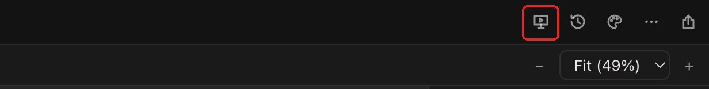
ClaudeUsage on the Mac mini keeps reading the keychain
ClaudeUsage.app on the Mac mini reads a keychain password every few seconds. When macOS's keychain service crashed, the keychain locked again and the next read raised an unlock prompt that held the mini's screen until someone typed the password; the mini's test lane stalled meanwhile (on 10-16 and 10-17). It is your app and your credentials, so no agent touches it.
- Leave as is
- Leave it as it is and accept the occasional stall.
- Alternatives
- Slow it to every few minutes, or retire it from the mini while the mini runs tests.
Recommendation, from the ballotyour call: retire or slow the polling on the mini when convenient; no agent touches it
Nothing to see in MAWS: ClaudeUsage is a separate app on the Mac mini, and the sitting didn't involve it.
MAWS's own sign-in to a connector (Notion)
Besides the connectors your Claude sessions use, MAWS can hold its own connection to a connector server, for HTML pages that read data (here the test page "Notion route check"). You connected Notion through MAWS with a browser sign-in; it survived a quit and relaunch without a second sign-in, and Disconnect worked. What never showed is MAWS's own connection in use: while a Claude session with Notion runs in the same folder, MAWS sends the page's requests through that session first, and the note's session was running all along.
- Keep
- Accept the sign-in as built.
- Alternative
- P4 (with keep): add a way to see, or choose, which connection a page's requests use.
Recommendation, from the ballotkeep the build: sign-in, keeping it across a relaunch, and Disconnect all worked. P4 a way to see or choose MAWS's own route, which never showed while the note's session was running (candidate 76)
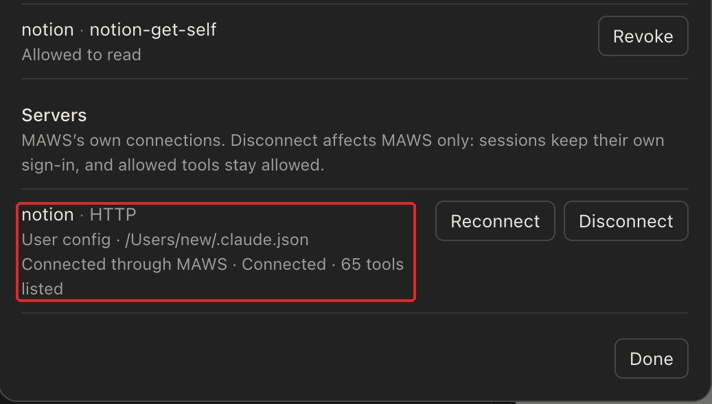
Sending an artifact to Notion or Google Drive
In the Library, an artifact's ⋯ menu > Export ends with "Send to Google Drive…" and "Send to Notion…"; a Claude session then exports the file and uploads it with your connector, in a normal model turn. You sent the note to Notion and it arrived once, as a new private page with the Markdown file attached: P3 sitting note (MAWS export, revision 1844). Drive wasn't tried, since no connector here can write files to Drive; you already chose the gws command-line tool for that, in P4.
- Keep
- Delivery passes as built; Drive stays with the gws P4 you chose.
- Alternative
- Fix now or P4: change how delivery works (see H and S-HEADER-SEND for the proposed changes).
Recommendation, from the ballotkeep (Notion delivered once); Drive goes through the gws CLI P4 you already chose
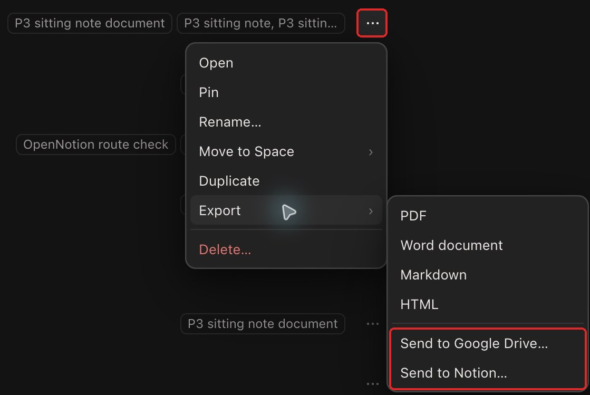
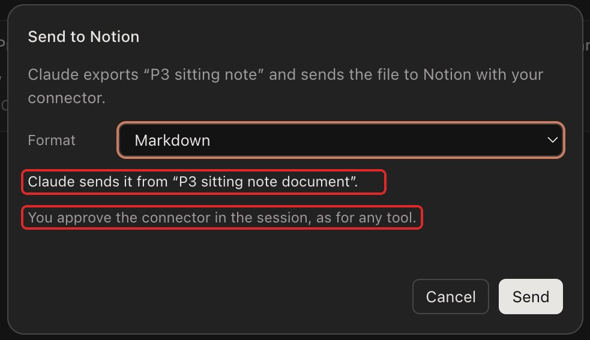
"Send to" exists only in the Library, not in the editor
While you're in a document, its header Export menu has only file formats; to send it to Notion or Drive you go to the Library and use the artifact's ⋯ menu. Sending also needs a Claude session turn, which you questioned: "do we really have to open a session to export to Notion?" MAWS already holds its own Notion connection (S-NATIVE-OAUTH), so a direct send is within reach.
- Keep
- Send to stays in the Library only.
- Alternative
- Fix now: add Send to the editor's header in this phase. P4: next phase, as a direct send from the editor through MAWS's own connection, with no Claude turn.
Recommendation, from the ballotP4, following your words: send straight from the editor through MAWS's own connection, with no Claude turn (candidate 78)
The design editor's toolbar when space is tight
The design editor (boards for desktop, phone and a square card) has one toolbar. When the area is narrow, for example with the sidebar and the right panel both open, the toolbar wraps: Text style, Comment, Comments and the zoom move to a second row, with their labels intact. The question is whether that wrapping is fine or the controls should be regrouped.
- Keep
- Wrapping onto a second row, as built.
- Alternative
- Fix now or P4: regroup, for example fold less-used buttons into a menu so the toolbar stays one row.
Recommendation, from the ballotkeep (the toolbar problems seen were the deck's and panel's, candidates 37 and 40, logged as defects)
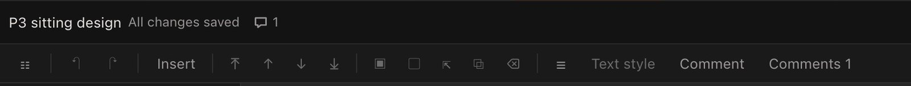
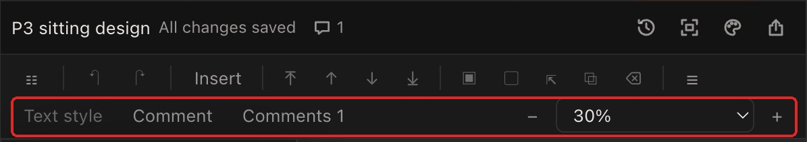
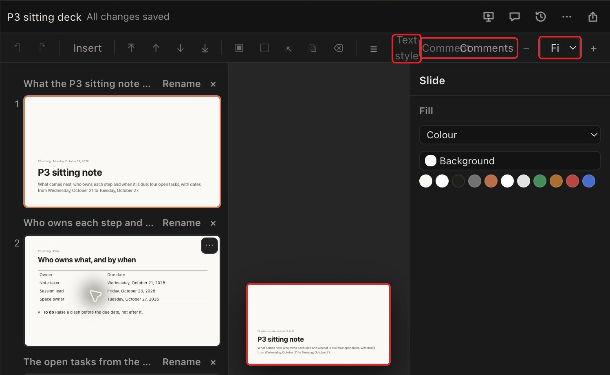
Bar charts where a category appears twice
A dashboard bar chart draws one bar per data row. When a category repeats (the Note taker owns two tasks, 1.5 h and 0.5 h), MAWS draws both bars in the same place, one over the other, and puts a warning under the chart. The warning names an internal setting ("Set agg …") instead of saying what to do, and the bars are near-black rather than a design-system colour.
- Keep
- Overlapping bars plus the warning, as built.
- Alternative
- P4 (or fix now): draw repeated rows side by side within their category, each bar with its own label.
Recommendation, from the ballotP4 side-by-side: the overlap stacked labels and drew near-black bars, and the warning shows a field name, "Set agg" (candidate 68)
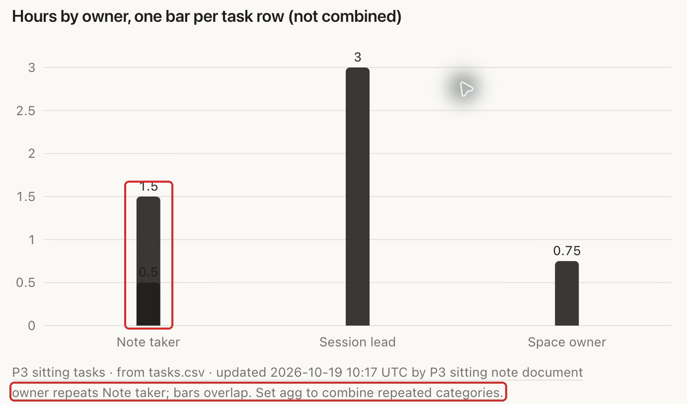
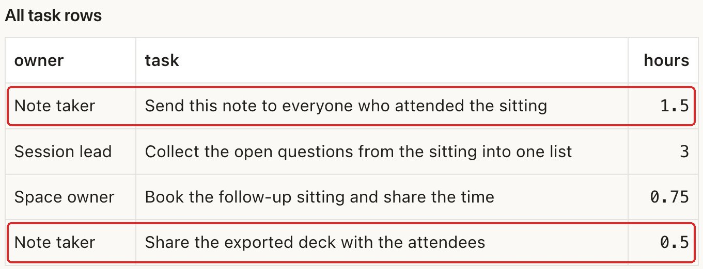
R.2 Taste
Keep the built result, or change it.
The right-hand panel: tools per session, artifacts in the panel or as tabs
The right panel belongs to the session in the main area; its tools (Session overview, Browser, Artifacts, Side threads, Questions) are tabs inside it. A pinned tool stays as you switch main tabs. An artifact can open inside the panel's Artifacts tool, with Back and "Open in tab", or as a full main tab, and both show the same live document.
- Keep
- The panel as built.
- Alternative
- Change: say what you'd want different in the note.
Recommendation, from the ballotkeep
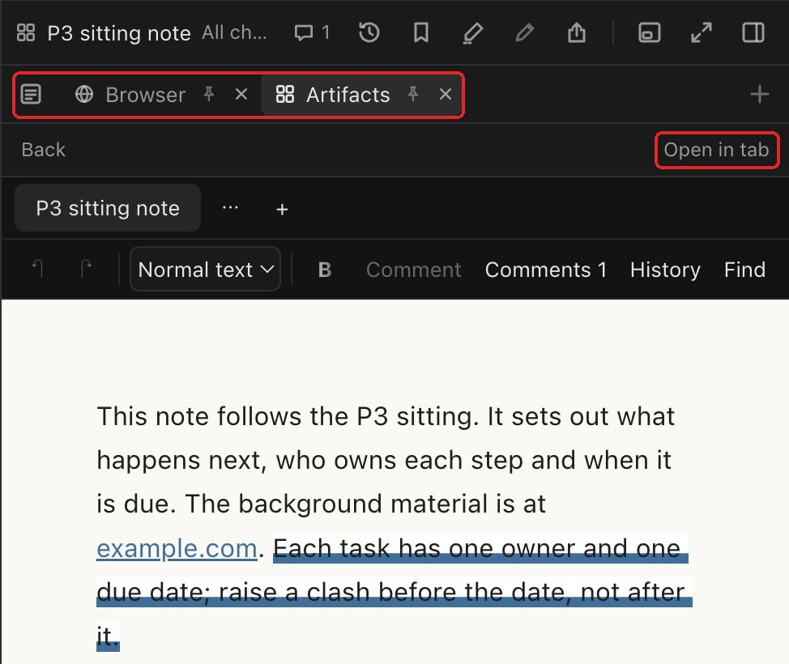
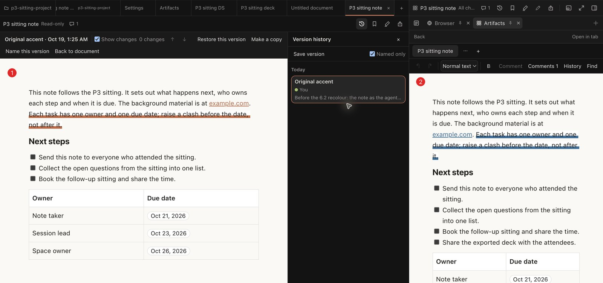
"Make something new": Blank, Ask Claude, Add a file
The cards at the top of the Library make a new artifact of each kind: New (blank), Ask Claude (a chat with "Make a document: " typed in) and, for files, Add a file…. The same cards appear on a Space's page, but there Ask Claude still opens the chat in whichever project was focused (doperpowers here), and Claude's tools can't put the result in a Space, so each result had to be moved by hand.
- Keep
- As built: Ask Claude from a Space behaves as it does from the Library; you move results into the Space yourself.
- Alternative
- Change: inside a Space, Ask Claude starts in the Space's linked folder and the result lands in that Space, with the Space's design system.
Recommendation, from the ballotchange: Ask Claude from inside a Space should start in the Space's folder and put the result in the Space (candidates 1, 5, 32, 55)
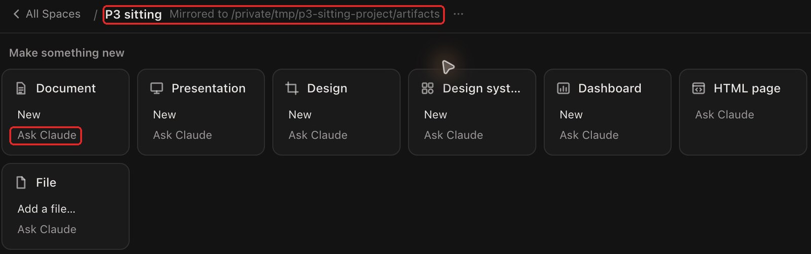
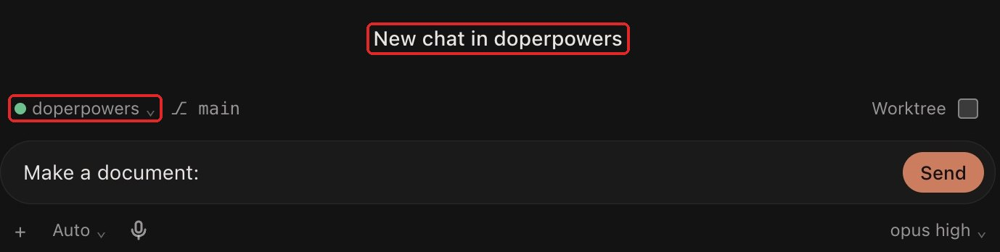
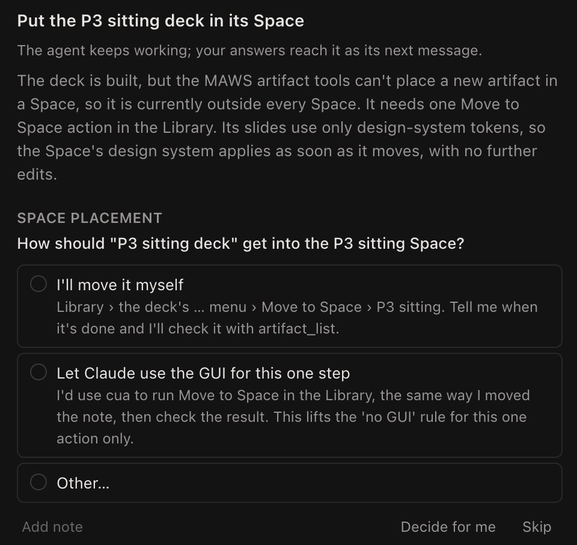
The floating session card: where it goes when closed, and how it sits over a web page
You can float the session as a card over the right panel (⌘⌥B). Closing the card turns it into a pill in the window's bottom-left corner (the sheet had proposed the tab row). Over a loaded Browser page the card doesn't cover the page: it becomes a full-height column on the left, under the browser's address bar, and the page fits beside it.
- Keep
- Both as built: the pill at the bottom left, the column over web pages.
- Alternative
- Change: for example the pill in the tab row, or the card floating over web pages as it does elsewhere.
Recommendation, from the ballotkeep; the float-hides-everything case (58) is a defect, not taste
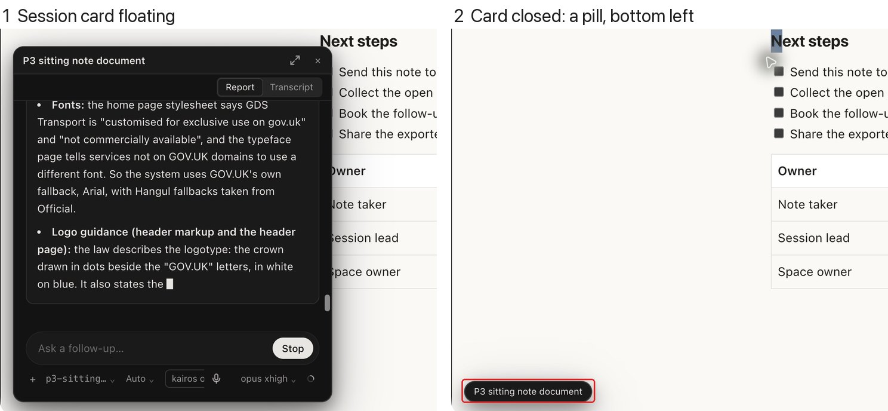
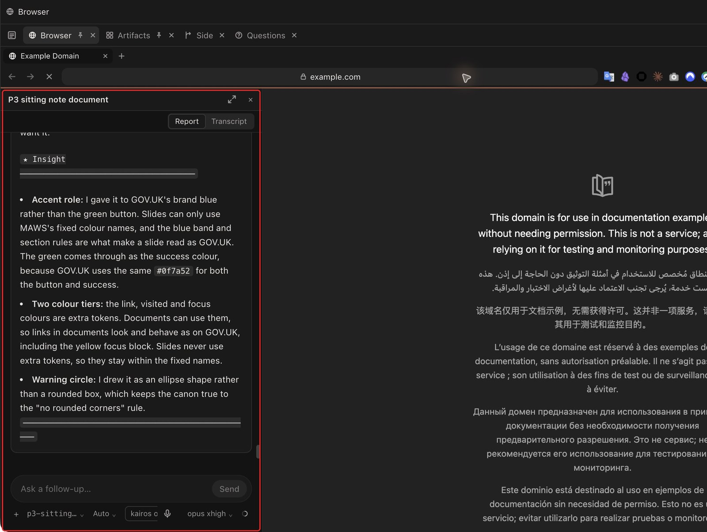
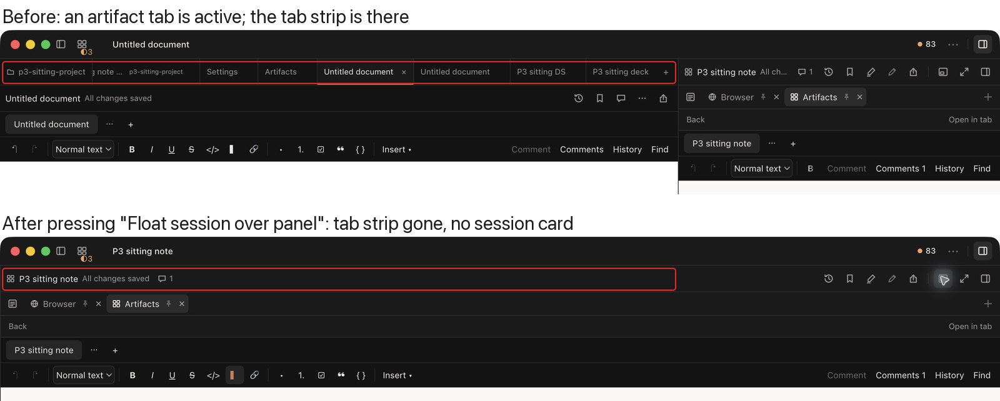
The presenter, and the names of the three PowerPoint choices
The presenter passed on your two displays. The PowerPoint export offers "fonts by name", "basic fonts" and "slides as pictures". In Keynote, "fonts by name" reported missing fonts and "basic fonts" was the clean, editable one, but nothing in the names tells you so.
- Keep
- The presenter and the three labels as they are.
- Alternative
- Change: keep the presenter, and relabel the choices so the one that suits Keynote (and any computer) is obvious.
Recommendation, from the ballotkeep the presenter; change the font variants' labels so the one that suits Keynote is clear (72)
Toolbars squeezed letter by letter, and a comment with nowhere to go
Two things. In narrow spaces the deck toolbar breaks words: in the panel "Insert" becomes "Inse / rt" and "Text style" runs down the edge one letter per line; in a narrow main tab "Comment" and "Comments" overlap and the zoom reads "Fi". And commenting on a document that has no chat of its own (made with New) in a folder you haven't trusted: the card says only "Trust this folder in the session to continue" with Open session, and there is no field to write the comment.
- Keep
- Both as built.
- Alternative
- Change: toolbars fold cleanly (for example into a More menu) instead of breaking words; the comment card always offers a field and a way to start or pick a session.
Recommendation, from the ballotchange both (26, 37, 40)
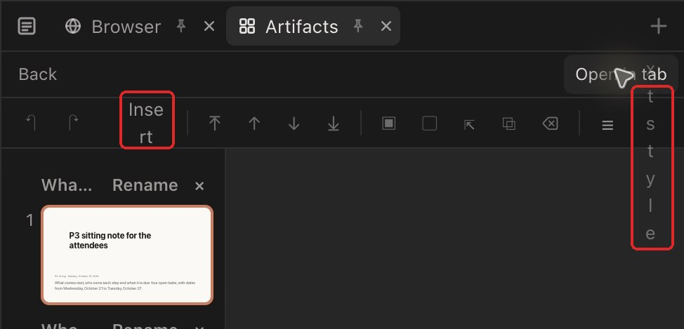
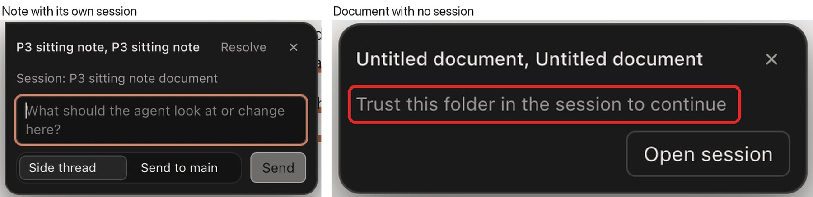
Repeated bars: overlapping or side by side (the look)
The same chart as S-REPEATED-BARS; here the question is only how it should look. Today the Note taker's two tasks (1.5 h and 0.5 h) are drawn on top of each other in one column, with a warning under the chart.
- Keep
- Overlap in one column, with the warning.
- Alternative
- Change: side by side, two bars next to each other under "Note taker", each with its own label.
Recommendation, from the ballotchange (side by side)
Connecting through your browser, and staying signed in
MAWS's own Connect sends you to your browser (Chrome) to sign in. MAWS then keeps the sign-in itself, encrypted with your Mac's keychain, so after you quit and relaunched it was still connected without asking again. Disconnect forgets it, and the next Connect asks you to sign in again.
- Keep
- As built.
- Alternative
- Change: for example sign in inside a MAWS window instead of the browser, or be asked again after each relaunch.
Recommendation, from the ballotkeep
How the note arrived in Notion, and sending from the editor
Send to Notion ran a 62-second Claude turn in the note's session, which created a new private page, P3 sitting note (MAWS export, revision 1844), with the note attached as a Markdown file (Notion renamed it P3_sitting_note_(revision_1844).md). The note's text isn't on the page itself; you open the attachment to read it. And there is no Send to in the editor's header (S-HEADER-SEND).
- Keep
- Delivery as an attached file through a Claude turn; Send to only in the Library.
- Alternative
- Change: send directly from the editor with no Claude turn and, if you prefer, have the note arrive as a readable Notion page instead of an attachment.
Recommendation, from the ballotchange: direct send, and as a readable page rather than an attachment if you prefer (77, 78)
Send your answers
Reply "all as recommended", name the handles where you differ, or paste the text this button copies.